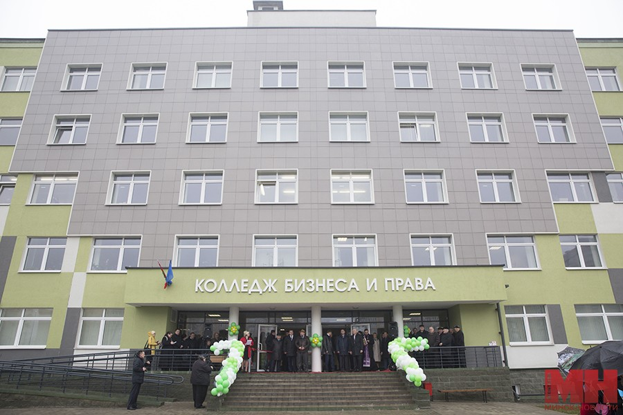
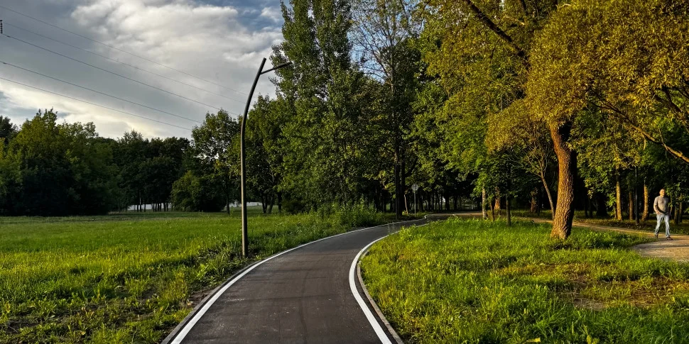
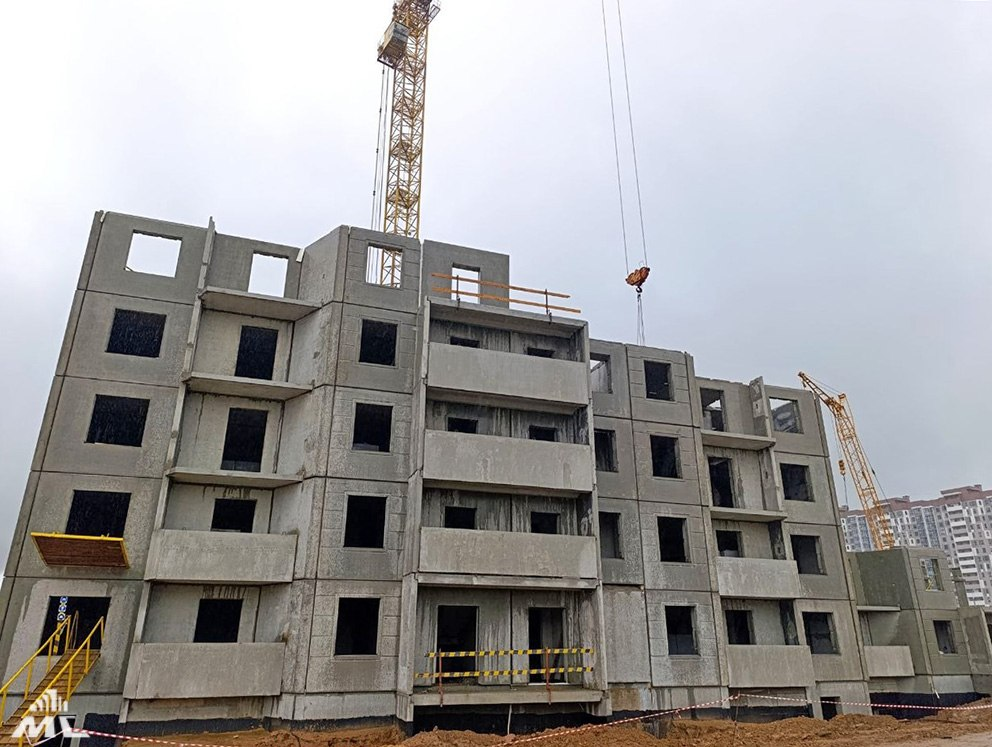
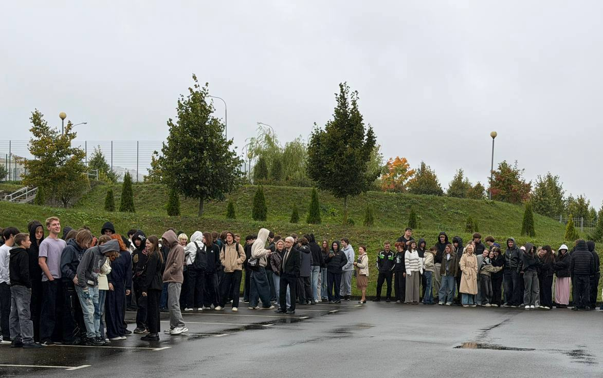
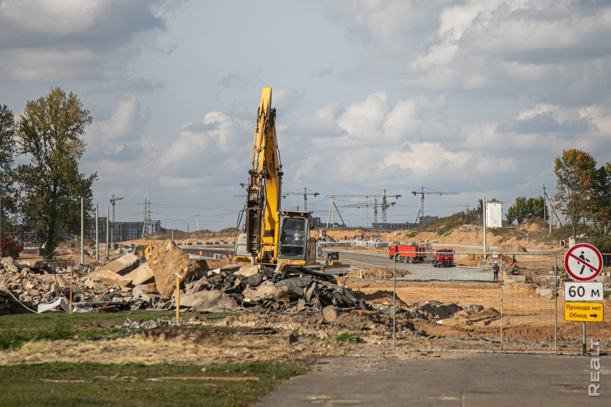

За последний год в учреждении образования "Колледже бизнеса и права" инфляция подскочила на 10%! Во всяком случае, так заявляет часть студентов, даного учебного заведения, однако является ли это правдой? Мы впервые зашли на пару в КБиП, чтобы проверить является ли это правдой. Как сообщает Лилия Алексеевна, стоимость платы за отработку занятия повысилась с 9 белорусских рублей в 2025/2026 учебном году до 15 белорусских рублей в 2026/2027 учебном году. Продолжится, ли этот тренд, пока неясно. В буфете учебного заведения стоимость пиццы подросла с 3.50 белорусских рублей до 3.80 белорусских рублей. Как видим от части данное заявление является правдой.

Маршрут, объединяющий целый ряд городских парков, природных и рекреационных зон, появился еще полвека назад, но в этом году вдоль Слепянской водной системы строится новая велодорожка с покрытием из асфальтобетона, параллельно обустраиваются тротуары, укладывается плитка, будут организованы площадки для отдыха со скамьями и навесами, а также освещение. В настоящий момент разные участки велодорожки находятся в разной степени готовности: на некоторых только готовятся уложить асфальт, на других он уже есть, а кое-где даже нанесена разметка. Сейчас же стало известно, что запуск движения по новой городской велодорожке намечен на сентябрь, при этом основную ее часть сдадут уже в августе. Об этом корреспонденту агентства «Минск-Новости» рассказал директор ГП «Гордорстрой» Сергей Панёв.
“Уже есть еще один снимок разработки? Разве они не выпустили его в прошлую пятницу?” Действительно, это намного раньше, чем обычно. Даже если принять во внимание, что моментальные снимки разработки становятся все более частыми в конце процесса подготовки к замораживанию функций, менее недели означает, что имели место исключительные обстоятельства. В частности, в нашем предыдущем моментальном снимке разработки было несколько отчетов о сбоях при запуске на macOS, и их не удалось загрузить в Google Play Store, которые были исправлены с помощью GH-123439 и GH-123474 соответственно. Поразительно, но это не значит, что это все, что можно увидеть в этом блоге. Хотя это будет более скромная презентация, чем обычно, у нас все еще есть кое-что новенькое, что мы рады продемонстрировать!Пожалуйста, подумайте о финансовой поддержке проекта, если сможете. Godot поддерживается усилиями волонтеров и небольшой команды платных спонсоров. Ваши пожертвования идут на поддержку их работы и позволяют им уделять все свое внимание нуждам проекта. Перейдите в раздел "Загрузки" и ознакомьтесь с ним прямо сейчас или продолжайте читать, чтобы узнать больше об улучшениях в этом выпуске. Вы также можете попробовать веб-редактор, редактор XR или редактор для Android для этого выпуска. Если вы заинтересованы в последнем, пожалуйста, присоединяйтесь к нашей группе тестирования, чтобы получить доступ к предварительным сборкам. Иллюстрация на обложке взята из командной игры Acceptable Losses, действие которой разворачивается во время Первой мировой войны, где вы ведете свои отряды через короткую, но жестокую 20-дневную кампанию. Вы можете купить игру или бесплатно попробовать демоверсию в Steam, а также следить за разработчиками на Bluesky и Discord.

🤩Новосёлов станет больше! У нас хорошая новость – пошли в рост этажи жилого дома № 1👍 по генплану в границах Шаранговича-Горецкого-Рафиева (микрорайон №1, вторая очередь строительства). 📍Это в Сухарево,8, недалеко от ЖК «Вершина» и стильного квартала, построенного МАПИДом ранее. 🏢Дом растёт очень быстро. Монтажники СУ-207 работают в три смены и без выходных. В работе все три секции, в одной из них «собирают» уже пятый этаж. Трудятся две бригады, и панелевозы только успевают доставлять конструкции. Монтаж не останавливают даже в непогоду – нас застал на объекте осенний дождь. 🤔Что за дом? 16-этажный, модернизированной мапидовской серии М464-М, три подъезда. Всего будет построено 189 квартир общей площадью 13 179 квадратных метров. Заказчик жилья – УКС «Запад».

🔥24 сентября — Единый день безопасности в Республике Беларусь. 🚨Основная задача — обучение населения правильным действиям в условиях пожаров и нештатных ситуаций, а также действиям по оказанию первой помощи до прибытия спасателей, скорой помощи, милиции. 📍В колледже бизнеса и права проведено практическое занятие по отработке плана эвакуации и действий сотрудников по тушению условного пожара. #профилактика #Единый_день_безопасности #учебный_год_2026_2027

Этот пустырь в районе Орловской давно манил застройщиков. Еще лет десять назад здесь хотели возвести высотку, но местные жители отстояли территорию. Позже проект пересмотрели в пользу малоэтажных домов. Летом на площадке, наконец, начались работы. Вдобавок по соседству развернулась еще одна масштабная стройка – здесь прокладывают новую дорогу к жилому комплексу «Северный берег». Мы съездили на место и проверили, как продвигаются оба объекта. Участок под малоэтажки спрятался в районе улиц Гая и Брагинской. Зеленую территорию, окруженную коттеджами, раньше занимали хозяйственные постройки. Несколько лет назад предприятие «Минсккоммунтеплосеть» осуществило их снос и собиралось построить на этом месте жилой дом для своих работников. Тогда жители частного сектора выступили резко против многоэтажки, и от идеи строительства отказались. Участок на время оставили в покое: тут поставили детскую площадку и разбили газон. Все изменилось этим летом, когда детский городок демонтировали, а территорию огородили забором. Сейчас на участке начались первые работы. Сюда уже прибыла специальная строительная техника для забивки свай. Судя по паспорту объекта, заказчиком возведения многоквартирных домов в границах улиц Брагинской/Гая выступает УКС Заводского района. Известно, что на пустыре планируют возвести три трехэтажных одноподъездных дома – по 8 квартир каждый. Возле домов будет детская площадка и наземные парковки. Возвести дома намерены довольно в короткие сроки. Новостройки обещают сдать в июне 2027 года. Кому именно будут предложены квартиры в малоэтажках: очередникам (с направлением или без) или вообще всем желающим – пока неизвестно. Деклараций на жилье еще не выходило. Кстати, в двух шагах от тихой улочки Гая сейчас развернулась еще одна большая стройка. На улице Карастояновой уже снесли конечную автобусов, а скоро произойдет поистине историческое событие: соединение старой дороги с новоиспеченной улицей Лангбарда. Новая расширенная трасса будет вести от Парка Дружбы народов в «Северный Берег», что значительно сократит время в пути от центра жителям новостроек у Цнянского водохранилища.
Phone 18 Pro получил обновленный дизайн из окрашенного алюминия со стеклянной задней крышкой, которая сильно собирает отпечатки пальцев. Смартфон сохранил габариты и вес (211 граммов) предшественника, поэтому к нему подходят чехлы от iPhone 17 Pro. Новинка представлена в серебристом, черном, голубом и новом оттенке бургунди. Дисплей Ceramic Shield 2 стал втрое устойчивее к царапинам. Главное визуальное изменение экрана — вырез Dynamic Island, который уменьшился на 25% за счет переноса инфракрасной камеры под дисплей. Теперь он поддерживает до трех уведомлений Live Activity одновременно.За производительность отвечает чип A20 Pro с новой испарительной камерой, площадь которой выросла в три раза. Графическая мощность выросла на 40% по сравнению с моделью 17 Pro, гарантируя работу без перегрева. Емкость аккумулятора составляет 4056 мАч (прирост +1,7%), чего хватает на 16 часов работы. До 50% гаджет заряжается за 15 минут.Все три тыловые камеры получили сенсоры по 48 Мп. В основной камере появилась переменная диафрагма (от f/1.48 до f/4.0). Фронтальная камера имеет разрешение 18 Мп. В стандартном приложении стали доступны полноценные ручные настройки съемки (фокус, баланс белого, выдержка, гистограмма). Новинка отлично справляется с зумом и ночными кадрами.Переходить на iPhone 18 Pro с модели 17 Pro особого смысла нет из-за минорных изменений «под капотом». Однако для владельцев iPhone 15 Pro и более старых устройств новинка станет отличным обновлением по всем ключевым параметрам.